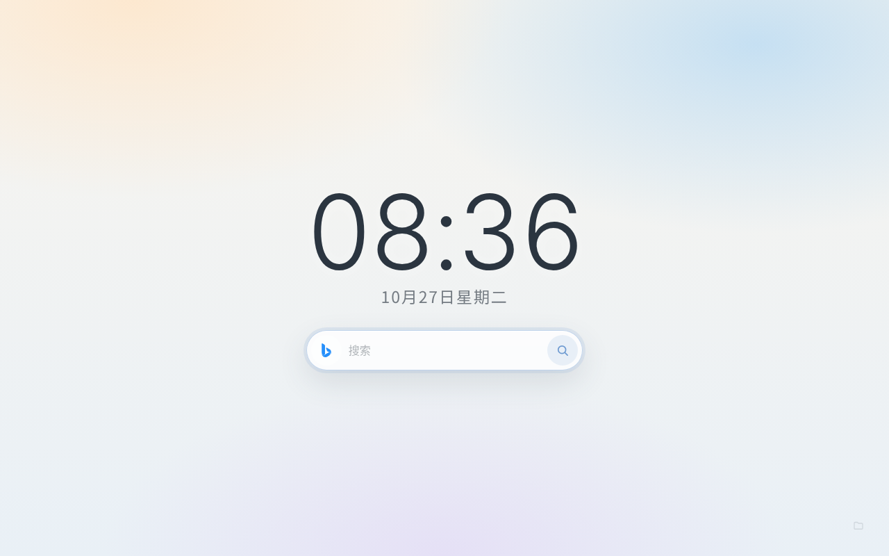
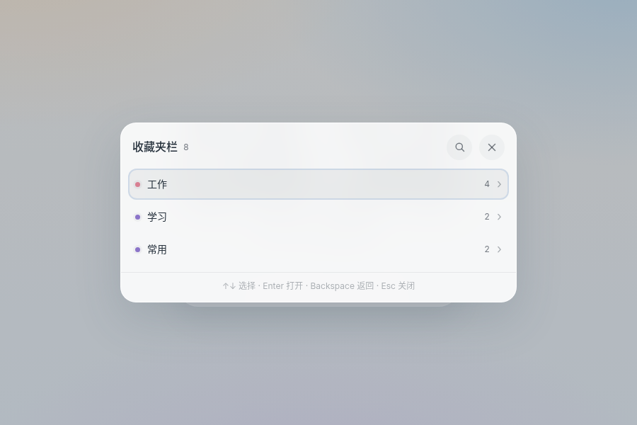
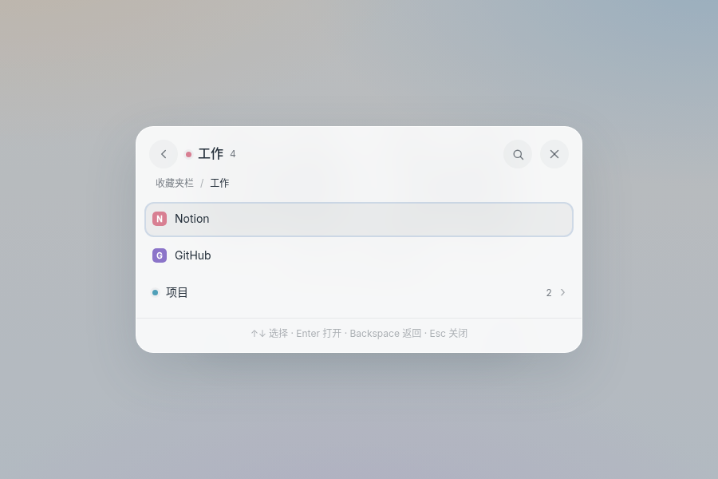
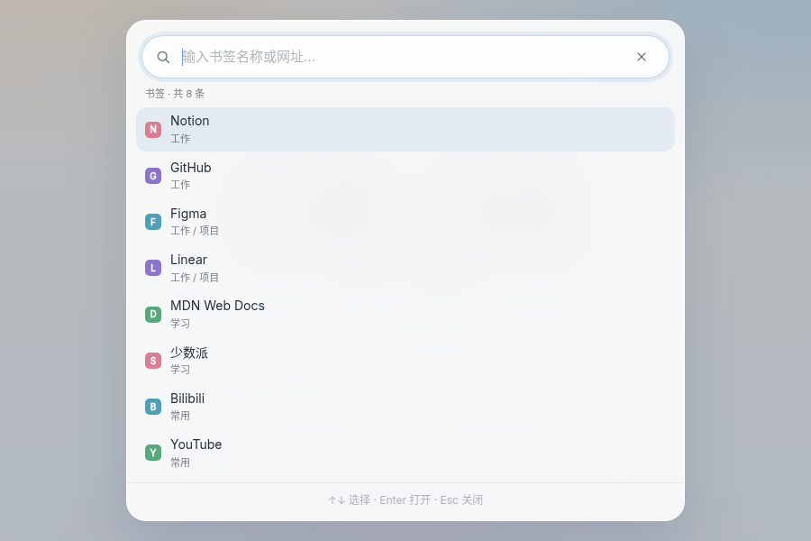
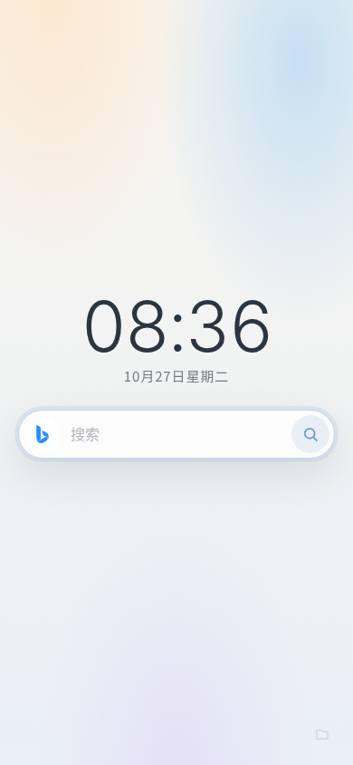

下载并解压
下载最新版 ZIP，解压到一个长期保留的目录，例如
D:\Startpage。以后不要移动或删除这个目录。
Microsoft Edge 新标签页
大时钟、安静的搜索、几乎隐形的收藏夹。键盘和鼠标都能用， 书签和使用记录只留在你自己的电脑上。
商店版正在准备上架。现在可以先从 GitHub 下载安装。

Install
GitHub 版需要开启一次开发者模式。商店版上架后，可以直接一键安装并自动更新。
下载最新版 ZIP，解压到一个长期保留的目录，例如
D:\Startpage。以后不要移动或删除这个目录。
打开 edge://extensions，开启“开发者模式”，
点“加载解压缩的扩展”，选择刚才解压的文件夹。
允许读取收藏夹，停用其他会占用新标签页的扩展，然后打开一个新标签页。 如果光标还在地址栏，点一下页面空白处。
商店版尚未上架。上架后，这里会出现一键安装按钮。
安装后会自动更新，不需要开启开发者模式。
Preview
首页只保留右下角一个很淡的入口。点开后按文件夹逐层浏览，也可以直接查找书签。




窄屏下自动收紧间距，搜索框仍然完整可用。
Features
没有多余的卡片和入口。常用操作都能用键盘完成。
大号 Inter Light 数字，中文日期不带年份，每秒安静更新。
Bing 和 Google 之间循环切换，搜索结果在新标签页打开。
右下角一个很淡的文件夹，点开就是收藏夹栏，不会铺满首页。
输入关键词，搜索全部书签；空查询按本机使用次数显示 Top 12。
/ 回到搜索框，: 查找书签，方向键和回车完成导航。
书签不离开浏览器，使用次数存在本地，没有广告和追踪。
Privacy
Before you start
只显示收藏夹栏。如果书签都在“其他收藏夹”，页面里不会出现，需要先移到收藏夹栏。
地址栏焦点是浏览器行为。新标签页打开后如果光标在地址栏，点一下页面空白处，搜索框就会获得焦点。
GitHub 版需要手动更新。商店版会自动更新；解压版需要下载新版覆盖文件夹，然后在扩展页点“重新加载”。